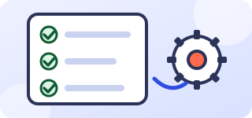
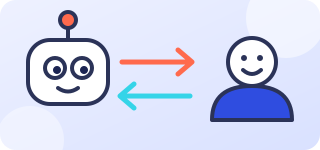
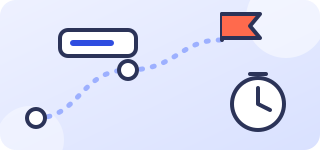

Главная / Блог
Блог
Практические материалы о том, как выбирать и запускать ИИ-решения.

СтатьяКак понять, что процесс стоит автоматизировать
Пять признаков процесса, с которого разумно начинать.
Читать →
СтатьяЧат-бот или живой оператор: как разделить работу
Что оставить боту, а что передать человеку.
Читать →СтатьяКак подготовить документы и базу знаний для ИИ-ассистента
Порядок в материалах решает половину результата.
Читать →
СтатьяПилот ИИ-проекта: что измерять и когда остановиться
Как честно оценить результат небольшого запуска.
Читать →СтатьяПерсональные данные и ИИ: на что обратить внимание
Короткий список вопросов до запуска проекта.
Читать →